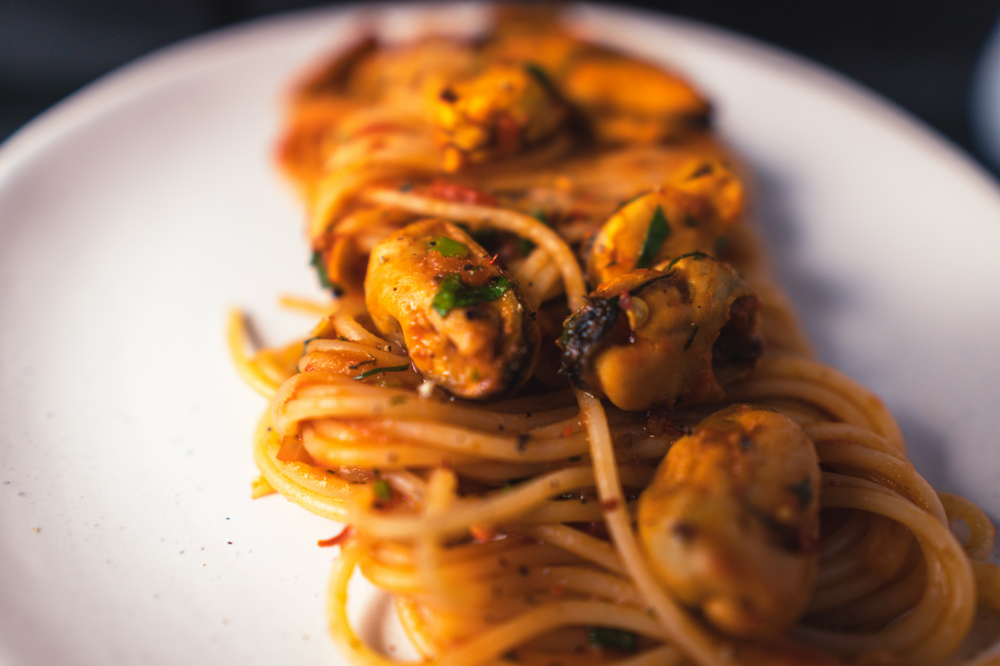

- 500g spaghetti
- 2 cups frozen mussels (de-bearded)
- 1 tablespoon oil, 1½ tablespoons butter
- 1 tablespoon oil, 1½ tablespoons butter
- Half a tomato or 1/8 can diced or crushed tomatoes
- ½ teaspoon dried thyme, 2 teaspoons dried parsley
- 1 teaspoon paprika (adjust to taste)
- ½ cup heavy cream
- 2 tablespoons grated Parmesan
- Large pot (for cooking pasta)
- Colander
- Sauté pan
- Cutting board, Chef's knife
- Measuring cups and spoons
- Wooden spoon or spatula
- Tongs or large serving spoon
- Bring a large pot of salted water to a boil and cook the pasta for 8-10 minutes, reserving about 1/2 cup of the starchy pasta water before draining.
- In a sauté pan, heat olive oil and 1 tbs butter over medium heat. Add the drained mussels and sauté for 3 minutes, then transfer to a bowl.
- Add remaining 1 tbs butter to the pan, add tomatoes and simmer for 6 minutes.
- Add minced garlic, onion, thyme, paprika, parsley. Cook for about 1 minute until fragrant.
- Reduce the heat to low. Add heavy cream and cheese, add a splash of reserved pasta water if needed for consistency. Bring it to a gentle simmer for 1 minute until slightly thickened.
- Remove the pan from the heat, add the drained pasta to the sauce in the pan. Use tongs to toss gently. Serve immediately, garnished with remaining parsley and extra grated cheese.
